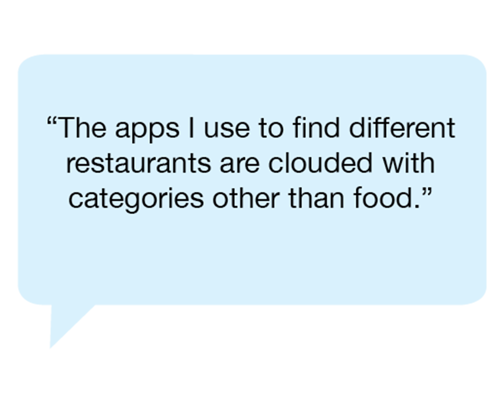
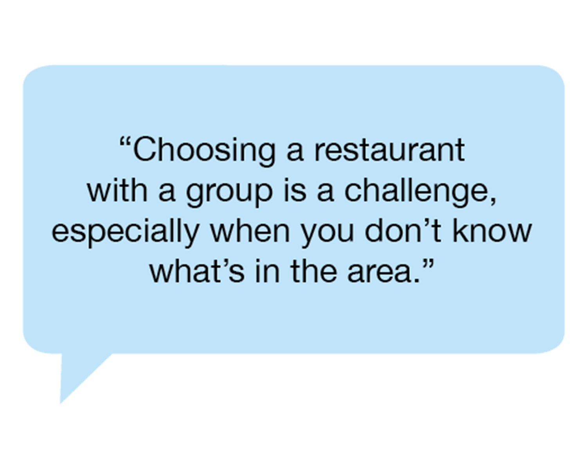
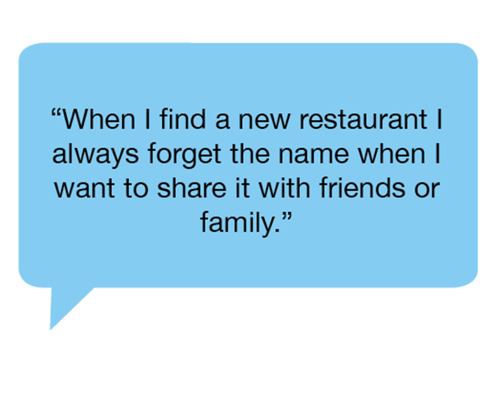
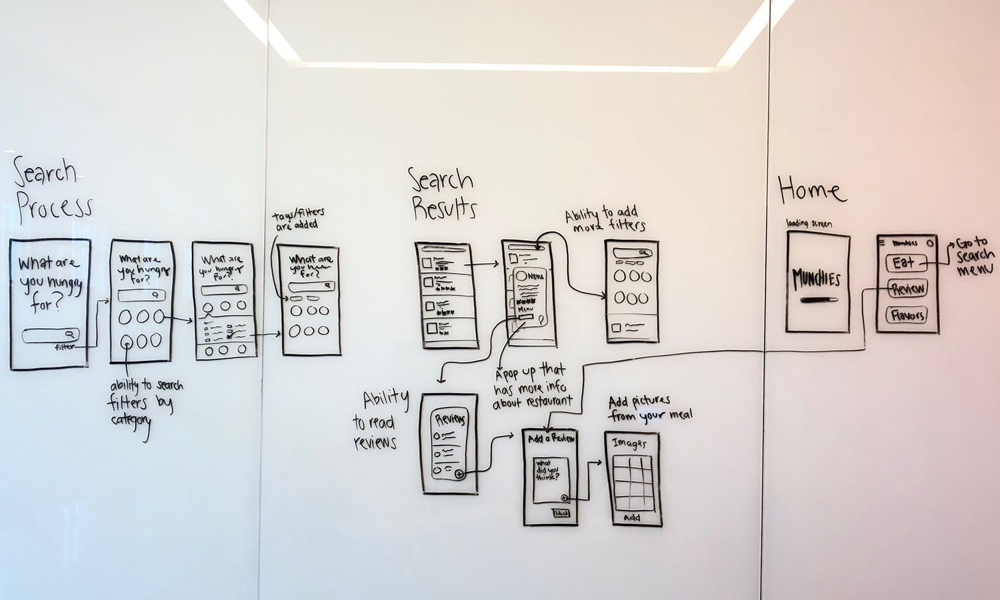
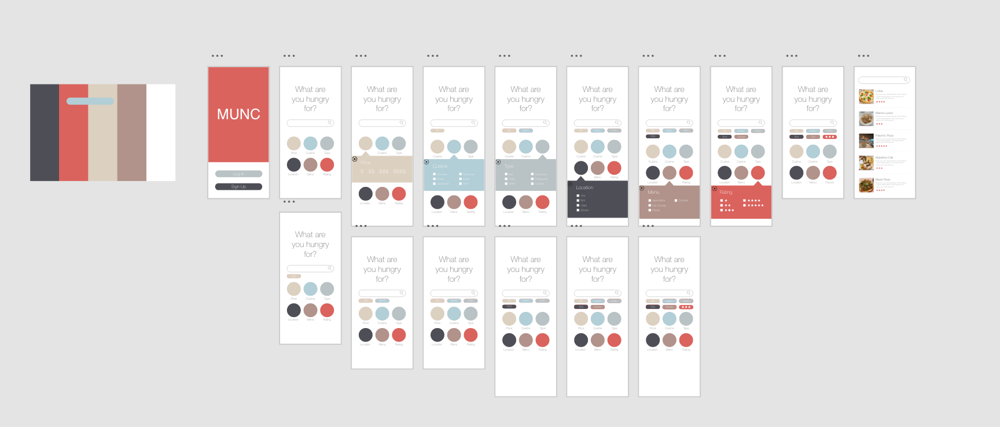
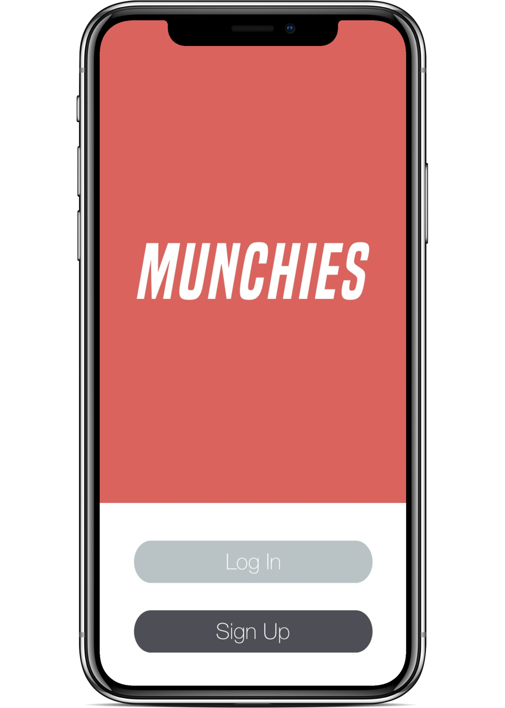
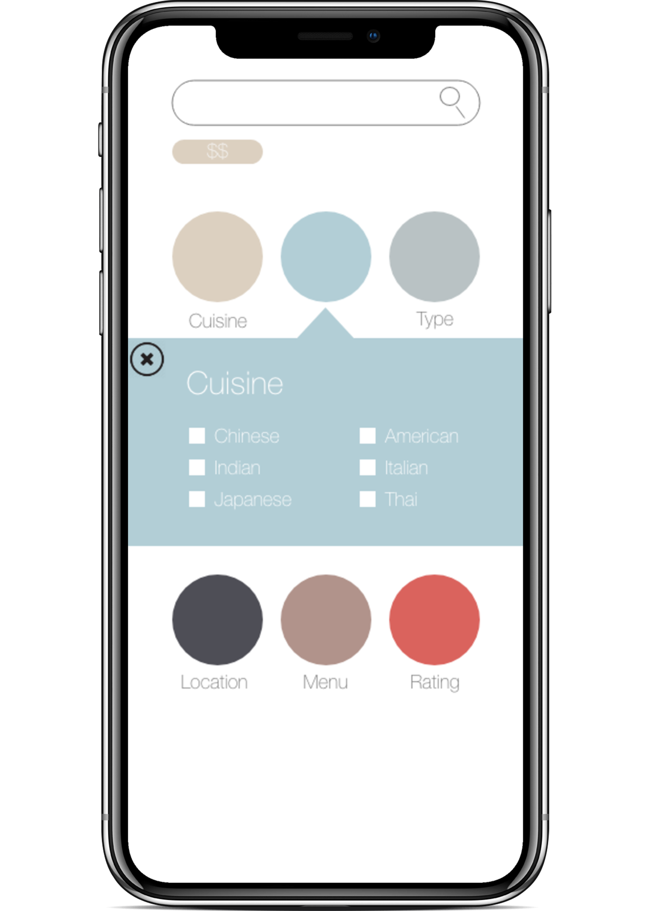
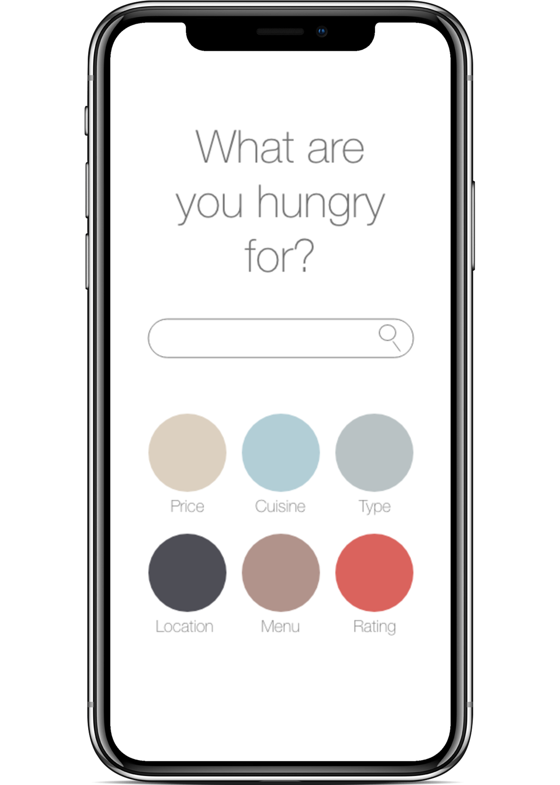
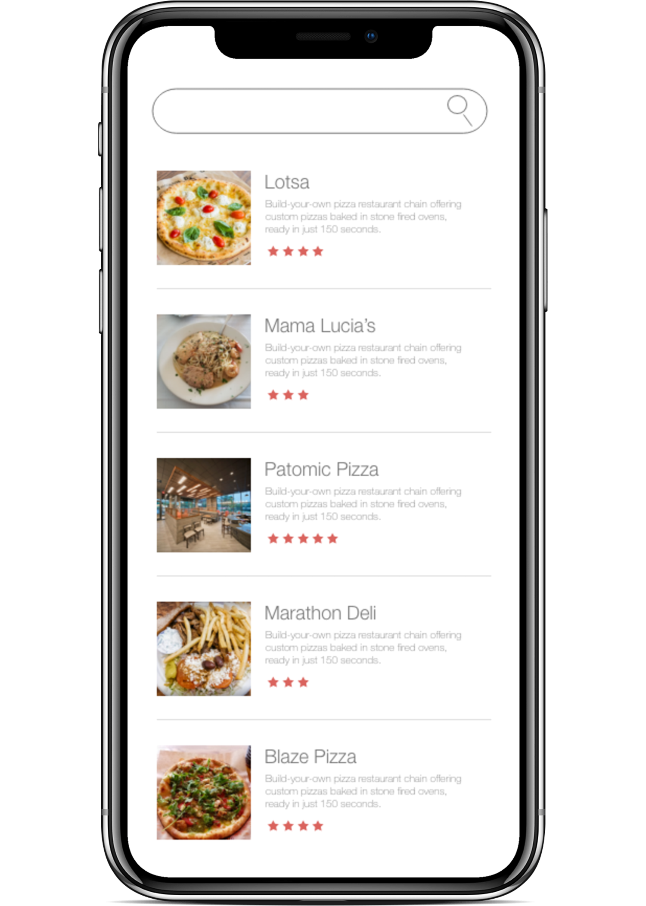

College students typically go out to eat in groups which can be
difficult when everyone has different preferences. They also discover
restaurants in unconventional ways. Current restaurant focused applications,
have gotten too big and cloud the discovery experience.
Team Members: Dawson Hoppes, Simone Pimento
The Context: This group project was completed for our Programming for the
Information Professional course. We built the app from the ground up,
starting with HTML/CSS and adding in JavaScript features.
The Problem
Decisions are Difficult
Indecisive users need a simple way to find the perfect restaurant.
Other applications that allow users to find various restaurants are often clouded
and can be difficult to use. A clean interface that gets right to the point is important
for our users.
The Process
Process Overview
User Interviews
Solution Brainstorming
Initial Project Proposal
Project Plan
Design
Sketching / Wire-framing
Hi-fidelity Prototyping
Coding
HTML + CSS
JavaScript
Final Product Presentation
User Interviews
To gain a better understanding of our user, we preformed initial user
interviews. During these interviews we spoke in depth with students
about their experience using various tools to find restaurants.
Some of the feedback we received included:



Project Proposal
We created a project proposal with the solutions we brainstormed,
however due to the timeline of our course, we decided to limit the
scope of our application to simplifying the restaurant recommendation
experience.
Project Plan
We developed a project plan that contained software resources, our project
timeline, and our risk management plan to ensure successful and timely
execution of our project.
While some of us had more experience with HTML, CSS, and JavaScript, in order
to continue growing our skills we decided to collectively work on all aspects
of the application.
Design Process
We aimed to design a clean user interface with a minimal aesthetic, that mirrored
our goal of a simple experience.
Sketches / Wire-framing
To begin the design process, we first started by sketching. I then gradually
moved to creating low fidelity wireframes to high fidelity prototypes.

Hi-fidelity prototype


The Log In Page
Here you have the option to sign up or log in to your account.


The Main Page
Here you can search for a particular restaurant or you can let us make some great
suggestions for you based on your preferences.

The Results
This page shows the results from your filtered choices with descriptions of
each restaurant to help make your decision easy.
Coding
HTML / CSS
Before we started adding any functionality to the app, we set up our framework and
nailed down our style guide and CSS.
We went through a few iterations as well as tests of the html design until we were
finally happy with the result.
Javascript
The next task was adding the Zomato API to our project.
Finishing Touches
After we connected the API, we needed to make some minor adjustments
in our CSS to tie up the loose ends of our project.
Final Product
In order to complete our final product in time we had to adjust our overall design.
Our original idea was to have the circles represent the larger categories. This would allow the user
to easily search through and find the relevant search filters they wanted to add.
Essentially they would work like stylized drop-down menus. However, in the end we settled
on a simpler design that worked well for our purposes.